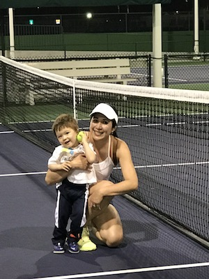

About Me

Hi! Welcome to Therisia's Bio.
I consider myself as an island girl since I was born in a beautiful island, Bali, Indonesia. I was the youngest of 4. I came here as an exchange student in High School and went to college in San Diego, CA.
I met my husband, Jeremy at a local tennis club in Salt Lake City, Utah while I was in a business trip. I crashed into the Men's 4.5+ work out and I was the only female player. The man, now my husband thought I can't hit a hard forehand but instead I made him run all over the court. The secret was I played tennis in college level. After traveling back and forth to Utah, I decided to move here as my husband's entire family lives here and have been living here for the past 9 years.
We have 3 children: a daughter who is almost 14 year old, 2 boys who are 12 and 3 years old. Our daughter is in competitive soccer and older boy is in competitive Basketball and Football. We also have 2 furry children, a black lab and husky mixed with Sheperd.
In my free time, I enjoy playing tennis with my husband and friends, watching my children's sports' games and traveling the world with them. Yoga, Crafting and Surfing are things I love to do as well. As far as for a career, recently, I decided to take a little adventure by running a small business and yet still in the transition to complete everything. I am pretty excited to use these new skills that I am learning from this web dev bootcamp to design my own company website.